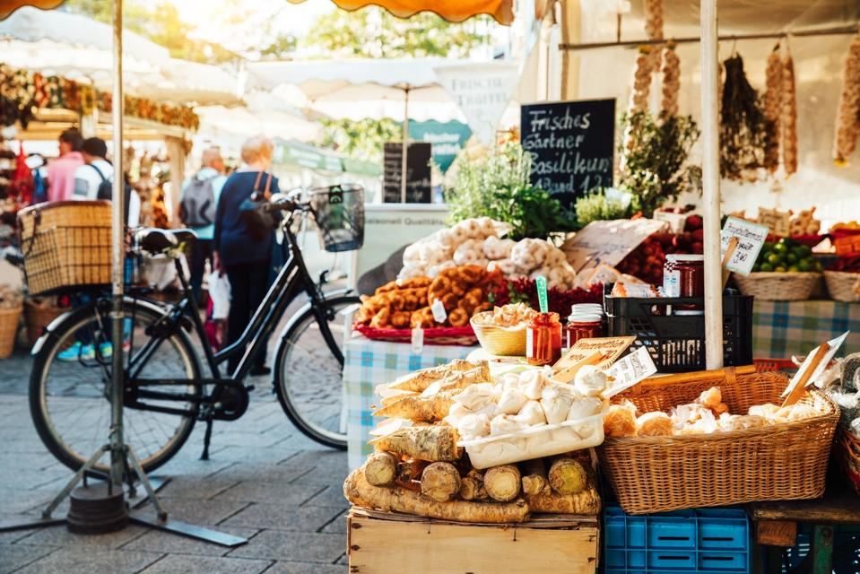
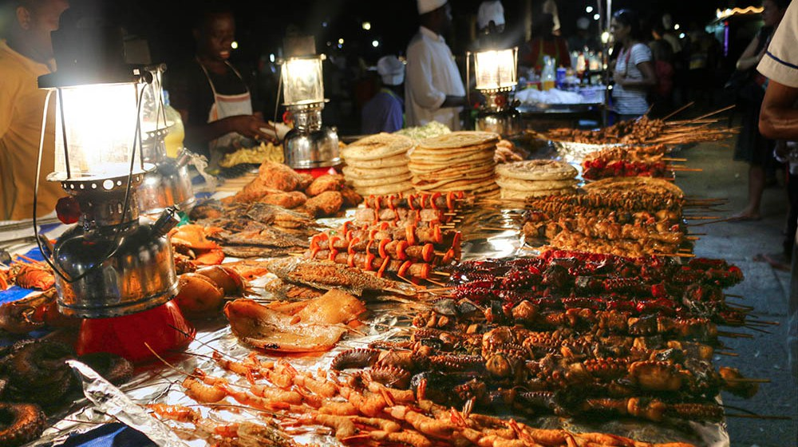
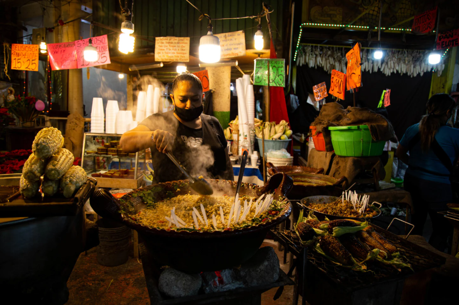
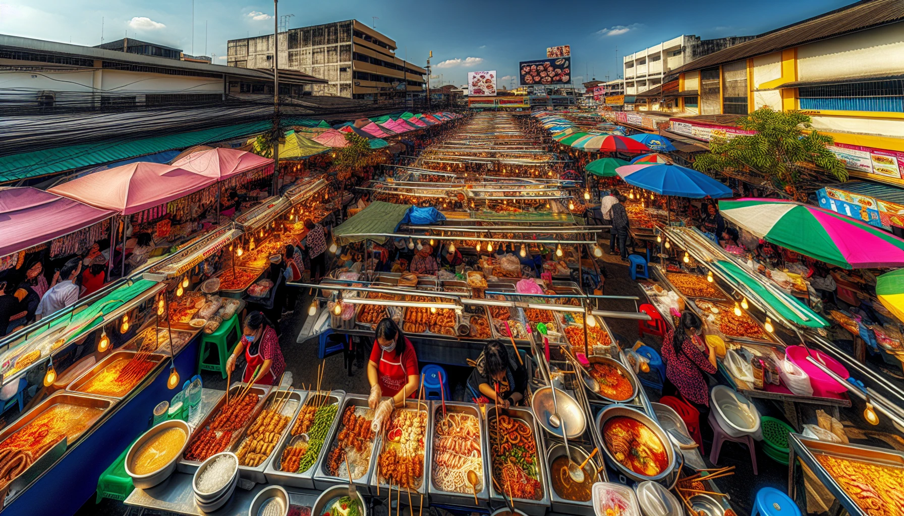

CONTINENTI
Lo street food è presente in ogni continente e riflette le culture locali in modo diretto e autentico. Ovunque, è un modo semplice e vivo per raccontare il cibo e la cultura di un popolo.
Europa
Dalle olive ascolane agli arancini siciliani, passando per churros, bratwurst e crêpes: lo street food europeo è un mosaico di gusti e tradizioni locali. Ogni boccone è una piccola storia da gustare tra le piazze e i mercatini del continente
Per saperene di più... Africa
Spezie, brace e convivialità: il cibo di strada africano è una celebrazione di sapori intensi. Suya nigeriano, bunny chow sudafricano o mutura del Kenya: ogni piatto riflette la ricchezza culturale del continente.
Per saperene di più... Asia
Profumi intensi, sapori decisi e colori accesi: dai baozi cinesi al pad thai thailandese, fino ai pani puri indiani e ai takoyaki giapponesi, il cibo di strada asiatico è un'esperienza multisensoriale che racconta secoli di cultura.
Per saperene di più...Americhe
Dalle empanadas argentine ai tacos messicani, dagli hot dog statunitensi agli acarajé brasiliani: lo street food delle Americhe fonde ingredienti locali e influenze globali in piatti vivaci, conviviali e irresistibili.
Per saperene di più... Oceania
Tradizioni antiche e spirito creativo si incontrano nel cibo di strada dell’Oceania. Dai meat pie australiani al hāngī maori, fino ai burger di pesce barramundi: ogni morso parla di natura, cultura e innovazione.
Per saperene di più... 